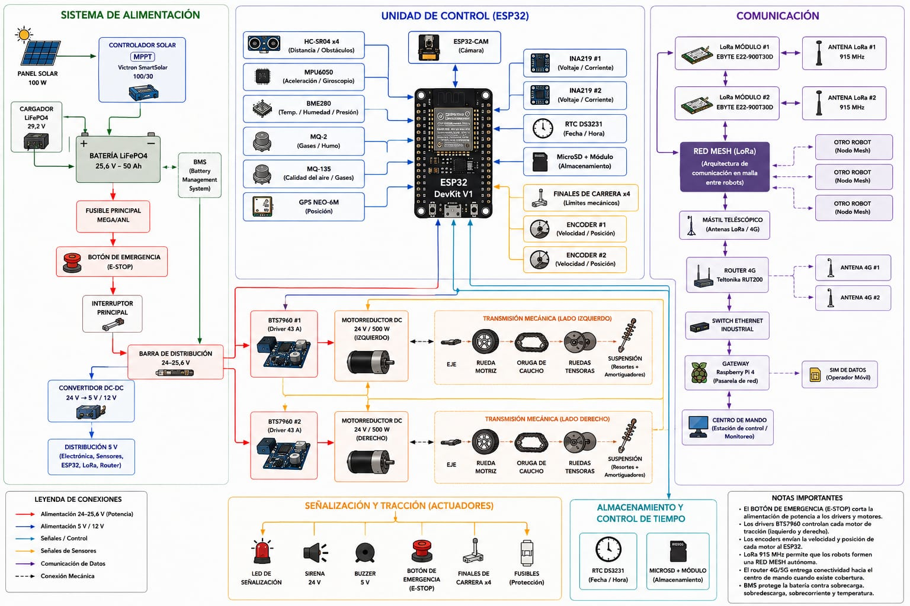

Liceo Politecnico Andes
Equipo: 18
EMERGENCYMESH

Liceo Politecnico Andes
Equipo: 18

Ficha TécnicaEl sistema mecánico de EMERGENCYMESH está diseñado para una masa máxima de 40 kg y utiliza dos motores de 500 W, con una potencia total de 1.000 W.
La transmisión posee una relación de 25:1 y entrega una velocidad de salida de 120 RPM. El sistema utiliza una batería de 25,6 V y 50 Ah, equivalente a una energía nominal de 1.280 Wh.
El torque calculado por motor es aproximadamente de 39,8 Nm, obteniendo un torque total teórico de 79,6 Nm.
Considerando el radio efectivo de 102 mm y una eficiencia mecánica del 85 %, la fuerza de tracción disponible es aproximadamente 663 N.
La velocidad máxima teórica del robot es de aproximadamente 4,61 km/h.
Para una masa de 40 kg y una pendiente de 15°, la fuerza necesaria considerando resistencia a la rodadura y una aceleración de 0,5 m/s² es aproximadamente 151,9 N.
Al comparar este valor con los 663,3 N disponibles, se obtiene:
663,3 N > 151,9 N
Por lo tanto, el sistema de tracción dispone de fuerza suficiente para superar la pendiente considerada bajo las condiciones de diseño.
La corriente nominal aproximada de los dos motores es de 39,1 A.
La batería almacena 1.280 Wh y, considerando un 85 % de energía útil, la autonomía estimada trabajando a máxima potencia es de aproximadamente 1,1 horas.
El mantenimiento mecánico considera la revisión periódica de orugas, ruedas motrices, ruedas tensoras, rodillos, rodamientos, ejes, suspensión, chasis, motores y tornillería.
Las inspecciones permiten detectar desgaste, holguras, desalineaciones, problemas de tensión y posibles fallas antes de que afecten el funcionamiento del robot.
El diagnóstico integra las variables mecánicas y eléctricas. Un aumento de la carga mecánica puede producir un aumento del torque requerido y, como consecuencia, un aumento de la corriente consumida.
Algunos síntomas que pueden utilizarse para detectar fallas son: desviación del robot, salida de la oruga, ruidos metálicos, calentamiento del motor, pérdida de velocidad, vibraciones y corriente elevada.
Antes de realizar mantenimiento se debe detener el robot, activar la parada de emergencia, desconectar el seccionador, aislar la alimentación principal y comprobar la ausencia de tensión.
También se debe asegurar mecánicamente el robot cuando sea necesario levantar las orugas y utilizar los elementos de protección personal correspondientes.
El análisis demuestra que EMERGENCYMESH integra correctamente sus sistemas mecánico y eléctrico. La configuración de dos motores de 500 W, la transmisión 25:1 y la fuerza de tracción calculada permiten cumplir las condiciones de diseño consideradas.
Además, el sistema cuenta con procedimientos de mantenimiento, diagnóstico y seguridad que permiten mantener el robot en condiciones adecuadas de funcionamiento.